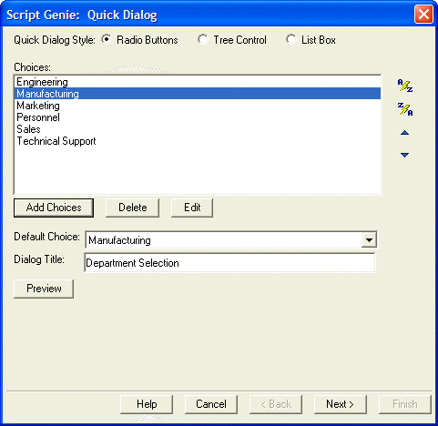
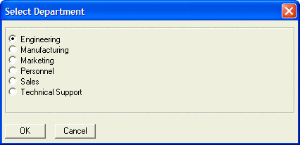
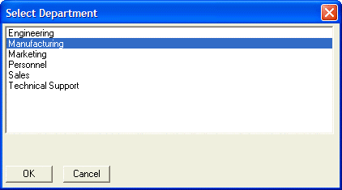
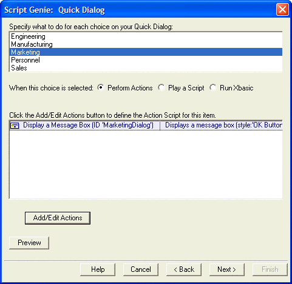
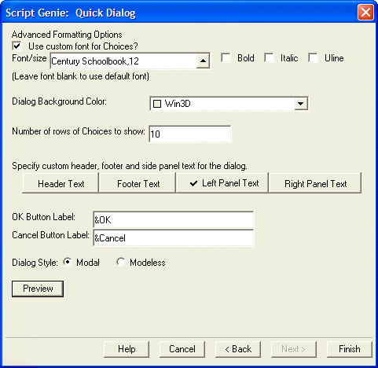
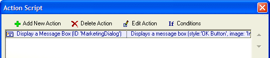
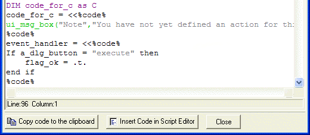

Quick Dialog Example
Begin by launching the Action Scripting Editor and clicking Add New Action.
Select Dialog Boxes > Quick Dialog. Here you can add selection choices, sort those choices, select a default choice, pick a style for the dialog box, and specify a title for the dialog box. You can also preview your dialog box.

Here are the radio button and list box versions.


Click Next > to specify actions for each of your choices. The actions can be Action Scripts, pre-built scripts, or in-line Xbasic code (including calls to user defined functions).

Click Next > to begin formatting the dialog box. Here you can specify the font, size, and style for both the choices and for additional descriptive text that you can put on any side of the choices. You can specify the dialog background color and the number of choices to display. You can define the OK and Cancel button labels and whether the dialog box will be modal or modeless. Again, you can preview your results.

Optionally click the Header Text, Footer Text, Left Panel Text, or Right Panel Text buttons to add additional text that will be positioned above, below, to the left, or to the right of the choices.
Click Finish to return to the Action Scripting Editor.

If you began by calling the function from inside a script, you may choose whether to insert the resulting code into a script or to copy it to the clipboard and you are done.

See Also